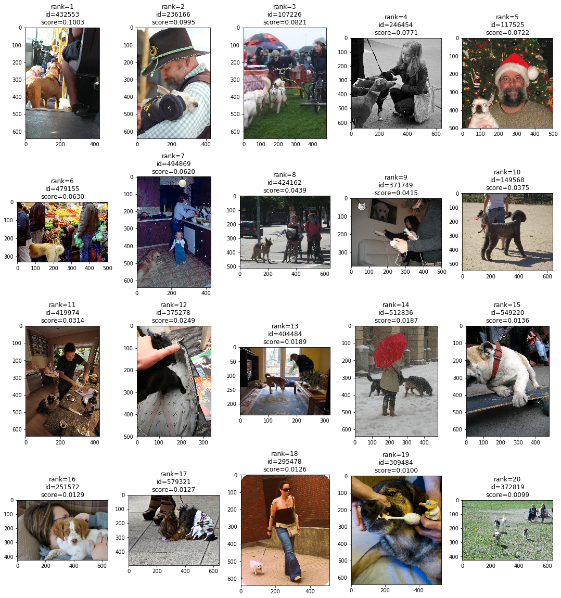

[DRAFT] Multidimensional Histogram Model
by Sergei Papulin (papulin.edu@gmail.com)
Contents
Multidimensional Histogram
For a multidimensional case the main definitions of the histogram model stay the same as shown here. So, we have the universal set, U, and elements of a histogram correspond to its elements. However, now each element x∈U is a vectors (x1,⋯,xm), and U is the Cartesian product over m sets U1,⋯,Um, denoted U1×⋯×Um, where m is the number of dimensions, Ui is the universal set of the ith dimension and xi belongs to Ui.
Histogram of a data instance can be represented as
H(d)=(h(e1∣d),⋯,h(en∣d)∣0≤h(x∣d)≤1,x∈U∑h(x∣d)=1),where ei=(e1,i1,⋯,em,im) and ej,ik∈Uj
The set of all high-level elements is defined as
EG={X∣X⊆U},where X can be represented as follows
X={(e1,⋯,em)∣ej∈Uj}⊆UIn a general form we can write it as
X=(X1,i1,⋯,Xm,im),where Xj,ij⊆Uj.
And for the case when we use the Cartesian product of universal sets that each of them represents a single dimension (or a data feature), X can be defined as:
X={(e1,⋯,em)∣ej∈Xj,ij}⊆U.The general form will be used later for querying as it is a more convenient and natural way to represent high-level elements for each dimension (see an image retrieval example below).
Histogram Algebraic System
Histogram algebraic system for the multidimensional case is the same as for the one-dimensional case (see here). There is no difference in definitions of the carrier and operations, but here we refer to multidimensional U:
H=⟨HG,∩,∪,∧,∨˙,∨,\˙,∖,−,0,1⟩.For example, the "AND" operation in query X1∧X2 remains unchanged:
H1∧H2={H1ifΣH1<ΣH2,H2otherwise,where
Hk=H(Xk∣d)=H((Xk,1,i1,⋯,Xk,m,im)∣d)=H({(e1,⋯,em)∣ej∈Xk,j,ij}∣d)and
ΣH(Xk∣d)=x∈U∑h(x∣Xk,d).
Examples
Here is a 2-dimensional case for image retrieval where two features are used - positions and objects. Figure 1 depicts the image segmentation by these two features.
Figure 1. Image segmentation by (a) positions and (b) objects
User should submit a query to get a subset of relevant images. For example,
Q=(Left,Dog)∧(Center,Person).Here we use the general form of query representation. The high-level elements are defined as follows
Left={e1,1,e1,2,e1,6,e1,7,e1,11,e1,12,e1,16,e1,17,e1,21,e1,22},Dog={e2,1},Center={e1,7,e1,8,e1,9,e1,12,e1,13,e1,14,e1,17,e1,18,e1,19},Person={e2,2}.For this query, the output result is shown below in figure 2.

Figure 2. Result of image retrieval for the query
Conclusion
TODO
References
- Папулин, С.Ю. Анализ коллекции данных посредством логико-множественного гистограммного представления / С.Ю. Папулин // Программные продукты и системы. – 2014. – №1. – С. 57–60.
- Папулин, С.Ю. N-мерное логико-гистограммное представление данных / С.Ю. Папулин // Наукоемкие технологии и интеллектуальные системы 2013: материалы 15-ой молодежной международной науч.-технич. конф. – М.: Моск. гос. техн. университет им. Н.Э. Баумана, 2013. – С. 337–339.
- Папулин, С.Ю. Поиск изображений по семантическим признакам: дис. … канд. техн. наук. : 05.13.01 / Папулин Сергей Юрьевич. – МГТУ им. Н.Э. Баумана. – Москва, 2014. – 214 с.
- Власов А. И., Папулин С. Ю. Анализ данных с использованием гистограммной модели комбинации признаков / Власов А. И., Папулин С. Ю. // Нейрокомпьютеры: разработка, применение. - 2019. - Т. 21, № 5. - С. 18-27.
- COCO (Dataset): Common Objects in Context
- Papulin S. Histogram Model